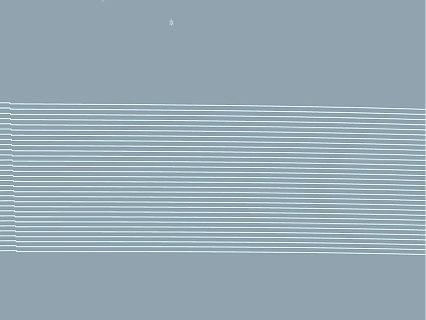
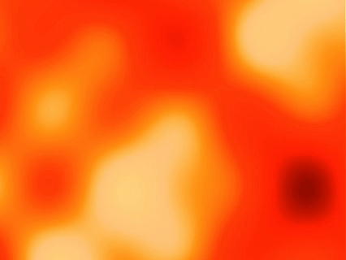
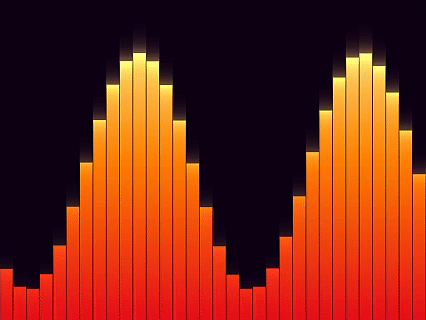
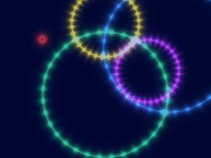
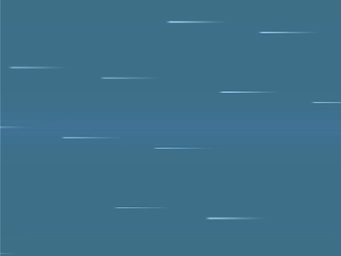

毕业设计作品

冷灰色背景构成冬季空间氛围，水平细线随风声频率产生振动。 白色粒子缓慢下落形成雪花效果，并根据风声强弱向左偏移， 以动态视觉表现冬季风声的寒冷与流动感。
橙黄色光线从中心向外辐射扩散， 配合柔和光晕营造温暖的重逢氛围。 声音驱动光线强度与扩散速度， 表现情绪由压抑到释放的瞬间。
多彩波纹从随机位置不断扩散， 不同层级相互交叠， 对应市集中的叫卖声与环境声， 呈现春节市场热闹而富有活力的氛围。

暖红色与橙色光斑缓慢流动， 模拟炉火与烛光般的温暖感受。 声音影响光斑亮度与流动节奏， 强调家庭团聚的情感温度。

彩色频谱柱状图随音频实时律动， 形成类似舞台灯光的视觉效果。 高低起伏的节奏对应春晚节目中的声音变化。

多色粒子不断爆炸扩散， 模拟烟花在夜空中绽放的瞬间。 声音驱动爆炸强度与扩散速度， 营造节庆高潮的视觉体验。
红橙色光点在画面中漂浮流动， 如同节日灯笼穿梭于人群之间。 声音控制光点亮度与运动幅度， 呈现庙会的人气与热度。

蓝白色流线高速掠过画面， 模拟车窗外快速后退的灯光轨迹。 音频驱动流线速度与密度， 表现春节结束后返程途中的节奏与速度感。